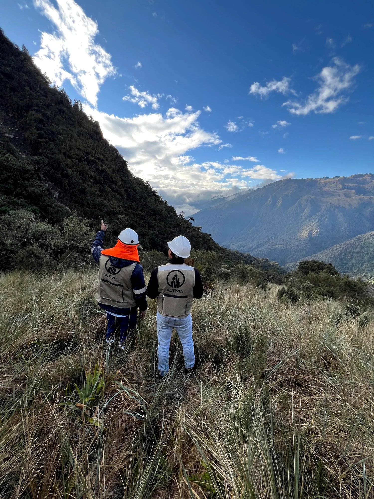

Rigor técnico
Utilizamos criterios, documentación y métodos adecuados al nivel de estudio y al contexto del proyecto.
02 / Nosotros
Equipo técnico orientado a comprender el terreno y aportar soluciones consistentes a cada proyecto.
Nuestra esencia
Creemos que una buena solución combina fundamento de ingeniería, observación directa y comunicación efectiva.
ALTIVIA es una consultora peruana dedicada a brindar soporte técnico a proyectos mineros y de infraestructura. Nuestro trabajo se orienta a la calidad de los análisis, la comprensión de los requerimientos y una colaboración transparente con los equipos de proyecto.
Articulamos distintas especialidades para abordar necesidades específicas, desde investigaciones y evaluaciones hasta ingeniería y acompañamiento en campo.

Registro fotográfico del equipo
Principios de trabajo
Utilizamos criterios, documentación y métodos adecuados al nivel de estudio y al contexto del proyecto.
Integramos perspectivas técnicas y mantenemos comunicación continua para resolver requerimientos.
Reconocemos la importancia de identificar riesgos y priorizar las condiciones seguras de trabajo.
Buscamos entregar recomendaciones claras, proporcionadas al alcance y útiles para decidir.
El trabajo en terreno

Nuestro compromiso
Soluciones adecuadas al propósito y contexto del proyecto.
Información verificable y criterios técnicos claros.
Atención a costos, plazos y constructibilidad.
Trazabilidad y consistencia entre los entregables.
Conversemos
Conversemos sobre las condiciones, necesidades y alcances de tu proyecto.